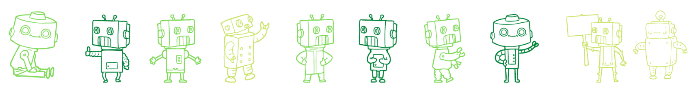

FuncionesLast updated: 2019-06-01
Muy a menudo necesitamos realizar acciones similares en muchos lugares del script. Por ejemplo, debemos mostrar un mensaje atractivo cuando un visitante inicia sesión, cierra sesión y tal vez en otros momentos. Las funciones son un concepto fundamental en la programación que permiten crear bloques de códigos reutilizables, es decir, código dividido en piezas más pequeñas y manejables, lo que facilita la lectura, la comprensión y la modificación del código. Ya hemos visto ejemplos de funciones integradas, como alert(message), prompt(message, default) que se utilizan para interactuar con el usuario a través de ventanas emergentes. Pero también podemos crear nuestras propias funciones.
Declaración de funciones
La palabra reservada function va primero, luego el nombre de la función, una lista de parámetros entre paréntesis (pueden ser 0 más, separados por comas) y finalmente el código de la función entre llaves, también llamado “el cuerpo de la función”.
Se ven de la siguiente manera
Nuestra nueva función puede ser llamada por su nombre: actualizacionDeMemoriaDipli(). Por ejemplo:
La llamada actualizacionDeMemoriaDipli() ejecuta el código de la función. Aquí veremos el mensaje dos veces. .
Importante
Este ejemplo demuestra claramente uno de los propósitos principales de las funciones: evitar la duplicación de código… Si alguna vez necesitamos cambiar el mensaje o la forma en que se muestra, es suficiente modificar el código en un lugar: la función que lo genera
¿Sabías qué...?
El proceso de crear una función también lo llamamos modularización

Variables
Locales
Una variable declarada dentro de una función sólo es visible dentro de esa función. Por ejemplo:
Externas
Una función también puede acceder a una variable externa, por ejemplo:
La función tiene acceso completo a la variable externa. Puede modificarlo también. Por ejemplo:
La variable externa sólo se usa si no hay una local. Si una variable con el mismo nombre se declara dentro de la función, le hace sombra a la externa. Por ejemplo, en el siguiente código, la función usa la variable usuario local. La exterior se ignora:
Variables globales
Variables declaradas fuera de cualquier función, como la variable externa usuario en el código anterior, se llaman globales. Las variables globales son visibles desde cualquier función (a menos que se les superpongan variables locales con el mismo nombre). Es una buena práctica reducir el uso de variables globales. El código moderno tiene pocas o ninguna variable global. La mayoría de las variables residen en sus funciones. Aunque a veces puede justificarse almacenar algunos datos a nivel de proyecto.
Parámetros
Parámetros
Podemos pasar datos arbitrarios a funciones usando parámetros. En el siguiente ejemplo, la función tiene dos parámetros: nombre y apellido.
Cuando la función se llama (*), los valores dados se copian en variables locales nombre y apellido. Y la función las utiliza.
Cuando un valor es pasado como un parámetro de función, también se denomina argumento. Para poner los términos claros:
Aquí hay un ejemplo más: tenemos una variable nombre y la pasamos a la función. Tenga en cuenta: la función cambia nombre, pero el cambio no se ve afuera, porque una función siempre obtiene una copia del valor:
Declaramos funciones listando sus parámetros, luego las llamamos pasándoles argumentos. En el ejemplo de arriba, se puede decir: "la función dipliPersonalizado es declarada con dos parámetros, y luego llamada con dos argumentos: nombre y "Diplomando".
Devolviendo un valor
Una función puede devolver un valor al código de llamada como resultado. El ejemplo, en este caso, calcula nuestro número de la suerte a partir de nuestra fecha de nacimiento:
La directiva return puede estar en cualquier lugar de la función. Cuando la ejecución lo alcanza, la función se detiene y el valor se devuelve al código de llamada (asignado al resultado anterior). Como buena práctica de programación Dipli nos recomienda colocarlo al final de la función. No es bueno que hayan muchos casos de return en una sola función.
Es posible utilizar return sin ningún valor. Eso hace que la función salga o termine inmediatamente. Por ejemplo:
Una función con un return vacío, o sin return, devuelve undefined
Si una función no devuelve un valor, es lo mismo que si devolviera undefined:
Un return vacío también es lo mismo que return undefined:
Nunca agregue una nueva línea entre return y el valor
Para una expresión larga de return, puede ser tentador ponerlo en una línea separada, como esta:
Eso no funciona, porque JavaScript asume un punto y coma después del return. Eso funcionará igual que:
Entonces, efectivamente se convierte en un return vacío. Deberíamos poner el valor en la misma línea.
Video
A continuación les dejamos un pequeño resumen de los temas que vimos en esta sección en formato de video!!
A trabajar!
Ahora que ya vimos el concepto de funciones y cómo utilizarlo dentro de
JavaScript, vamos a emplear los conocimientos en distintos desafíos de
programación que involucren funciones y variables. Para ello, ingrese a su CodeSandbox y cree la carpeta R3, luego
cree un archivo por cada desfío propuesto, el cual debe de contar con una función por cada mensaje. Cada archivo debe tener por nombre la palabra "ejercicio_nivel_".js, según corresponda
Nivel 1: STAR WARS: Mis primeras funciones
Anakin le pide a R2D2 que transmita los siguientes mensajes a toda la flota:
- Coby avisale a Obi-Wan que estamos tras el conde
- Asoka ve por el flanco derecho para evitar que escape hacia Naboo
- Rex toma a tus hombres y siganme tras el conde
Para ello es necesario crear una función por cada mensaje
Dentro de la carpeta R3 crear un archivo llamado ejercicio_nivel_1.js, que implemente las funciones correspondientes a cada uno de los mensajes.
Nivel 2: Siguiendo al conde Dooku
Anakin va tras los pasos del conde, para poder seguirlo debe de entrar al hiperespacio junto con su flota. Para ello le pide a R2D2 que calcule las siguientes figuras geométricas para determinar el tamaño del salto. R2D2 necesita realizar 4 funciones que muestre por pantalla las fórmulas de área y perímetro de las siguientes formaciones:
- Cuadrado
- Rectángulo
- Triángulo
- Circunferencia
Dentro de la carpeta R3 crear un archivo llamado ejercicio_nivel_2_area_perimetro.js, que implemente las funciones que retornan las fórmulas para las figuras geométricas detalladas
El maestro Yoda
Ejercicio propuesto: Las horas de la galaxia
Dentro de la carpeta R3 crear un archivo llamado ejercicio_nivel_2_horas.js, que implemente el calculo horario en Endor,Felucia y Naboo
Yar Yar Bin
Ejercicio propuesto: Conversor de unidades
Dentro de la carpeta R3 crear un archivo llamado ejercicio_nivel_2_conversor.js, que implemente la función que permite convertir de cm a metros.
Nivel 3: Refactorizando nivel 2
Despues del descanso y de comprender un tema nuevo, volvemos a realizar los ejercicios del nivel 2, pero en esta oportunidad sin usar variables globales, en su lugar crearemos funciones con parámetros
Siguiendo al conde Dooku parte 2
- Cuadrado
- Rectángulo
- Triángulo
- Circunferencia
Para este nivel tener en cuenta los siguientes datos, los lados del cuadrado miden 2 cm, los lados del rectángulo miden 2 y 4 cm respectivamente, los lados del triángulo miden 5 cm y el diametro de la circunferencia mide 4 cm
Nivel 4 Atrapando al conde Dooku
- Pentagono (n*lado donde n es la cantidad de lados)
- Paralelogramo (2* (base+altura))
- Rombo (4 * lado)
- Romboide (2 * (Lado1 + Lado2))
Para este nivel tener en cuenta que los datos necesarios son parámetros de entrada. La formacion de custodia esta compuesta por el siguiente orden Pentagono-Paralelogramo-Rombo-Rombo-Romboide-Rombo-Rombo-Paralelogramo-Pentagono.
Nivel 5: Refactorizando Siguiendo al conde Dooku parte 2
En esta oportunidad las funciones nos retornaran un valor el cual se mostrara por pantalla fuera de la función
Nivel 5 Formación especial
Obi-Wan le enseña una nueva formación de defensa a Anakin, la misma está copuésta por la formación circular y la formación corona circular. Le explica que esta nueva formación puede cubrir grandes superficies, para ello deben de:
- calcular superficie circular
- calcular superficie de corona circular
Construyendo el cuartel de la república
Actualizaron a 3CPO
Desafío DIPLI
Ahora que ya estás a full con los ejercicios de funciones, te proponemos una serie de desafios para poner aún más a prueba tus conocimientos y profundizar lo aprendido. Suerte!
General
Retomamos el desafio Dipli anterior y le aplicamos funciones. Hacemos memoria: Dipli, ¿Cuál es el Número?, es un juego simple donde un contrincante juega contra Dipli. El juego consiste en adivinar el número que imaginó Dipli realizando diferentes intentos, en los cuales arriesga un valor entre 0 y 100. Si el contrincante logra acertar, ganará la partida… por el contrario ganará Dipli.
Existen varias modalidades, con distintas innovaciones. La versión internacional, también llamada «pares polacos», está reglamentada por la Federación Internacional de Dipli, ¿Cuál es el Número? y se juega sólo con números pares y valores entre 0 y 200. También está la modalidad «Andina Patagónica», que admite valores bajo cero entre -20 y 40.
Otras reglas:
- El contrincante no debe arriesgar más de un valor en cada intento.
- Un jugador siempre deberá ver la respuesta de Dipli, antes de realizar un nuevo intento.
- Dipli no puede cambiar de número durante una partida.
- Dipli no puede imaginar números fuera del rango del juego.
- Si la partida se prolonga por encima de una cantidad de intentos(3) Dipli será quien gana.
¿Cuál será tu versión del juego? Charlalo con tu Facilitador o Facilitadora :)
Para trabajar en el desarrollo del desafio Dipli, seguí los siguientes paso:
- Ingresar al entorno Codesandbox, dentro de la carpeta
Diplicrear una carpetaR3. - Dentro de la carpeta
Dipli/R3, crear un scriptdesafio_dipli_1.js.
Desafío - parte I
Inicia el Juego. Implementar las funciones necesarias, siguiendo las recomendaciones vistas hasta el momento para que Dipli nos pueda dar la bienvenida al juego, mostrar las reglas, pedir al contrincante que imagine un valor y luego le cuente si el valor que había imaginado coinicide con el de Dipli. Finalmente salude al contrincante y lo invite a volver a jugar.
Restricciones: Dipli prefiere que usemos diferentes funciones para comunicarse con el contrincante. En este sentido desea que las funciones sean más de 3 y menos de 6.
Desafío - parte II
Evolucionar el desarrollo anterior para que Dipli imagine un nuevo número en cada ejecución. El juego es igual, solo que el valor que se muestra es generado al azar. Para ello puede utilizar la siguiente sentencia:
unNumeroAleatorio = Math.floor(Math.random()*(unValorMax-unValorMin+1)+unValorMin);
donde unValorMax y unValorMin son variables que nos sirven para que los números que se generen se encuentren entre dentro del rango [unValorMin y unValorMax].
Restricciones: Dipli prefiere que usemos alguna modalidad del juego, por ejemplo «pares polacos», «Andina Patagónica» u otra que se nos ocurra a nosostros. Se debe de implementar una función por cada modalidad. No se pueden utilizar variables globales
Desafío - parte III
Evolucionar el desarrollo anterior para que el contrincante pueda ingresar su valor y Dipli le muestre por cuanto falló. Recuerde que una función puede invocar a otra funcón. Restricciones: Dipli prefiere que mostremos mensajes amigables como "Fallaste por …". "Espero que en la próxima estés mejor". Utilizando tres mensajes diferentes.
Desafío - parte IV
Evolucionar el desarrollo anterior para que por medio de diferentes funciones se muestre mensajes como este "Ganó Dipli: False", "Ganó Contrincante: True", "El número que imaginó Dipli es más grande: False". Imagine un nuevo número en cada ejecución.
Restricciones: Dipli prefiere que informemos esto usando TRUE / FALSE… cosas de Dipli. Además un mensaje diferente para cada caso.